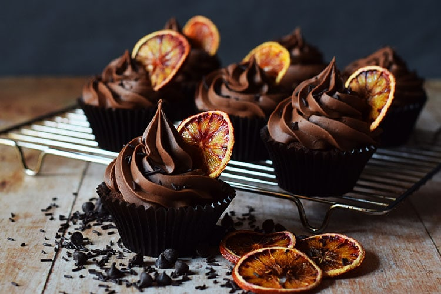

Chocolate Cupcake
A chocolate cupcake is a delightful dessert that is rich, moist and bursting with chocolate flavor. They are made with cocoa powder or melted chocolate.These sweet treats are soft, fluffy and often topped with creamy frosting like chocolate ganache or buttercream. Perfect for any occasion, chocolate cupcakes are the ultimate satisfaction for every chocolate lover's craving.

Ingredients
Here’s what you’ll need to make delicious chocolate cupcakes:
- 1 cup all-purpose flour (125g)
- 1/2 cup unsweetened cocoa powder (50g)
- 3/4 cup granulated sugar (150g)
- 1 teaspoon baking powder
- 1/2 teaspoon baking soda
- 1/4 teaspoon salt
- 1/2 cup milk (120ml)
- 1/2 cup vegetable oil or melted butter (120ml)
- 2 large eggs
- 1 teaspoon vanilla extract
- 1/2 cup hot water or brewed coffee (for extra richness) (120ml)
- Chocolate buttercream frosting
- Sprinkles
- Chocolate chips
Method
- Preheat the oven to 350°F (175°C) and line a cupcake tin with paper liners.
- In a large bowl, whisk together the flour, cocoa powder, sugar, baking powder, baking soda, and salt.
- In another bowl, whisk together the milk, vegetable oil (or melted butter), eggs, and vanilla extract until well combined.
- Gradually pour the wet mixture into the dry ingredients and stir until just combined (do not overmix).
- Slowly mix in the hot water or brewed coffee to thin out the batter; it will be slightly runny.
- Divide the batter evenly among the cupcake liners, filling each about 2/3 full.
- Place the tray in the preheated oven and bake for 18–22 minutes, or until a toothpick inserted in the center comes out clean.
- Let them sit in the pan for 5 minutes, then transfer to a wire rack to cool completely.
- Once cooled, top with chocolate buttercream frosting, sprinkles, or any desired toppings.